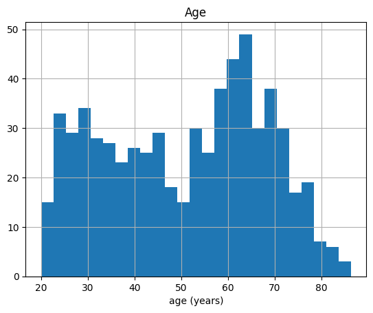
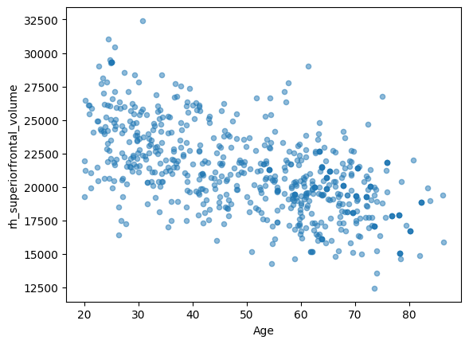
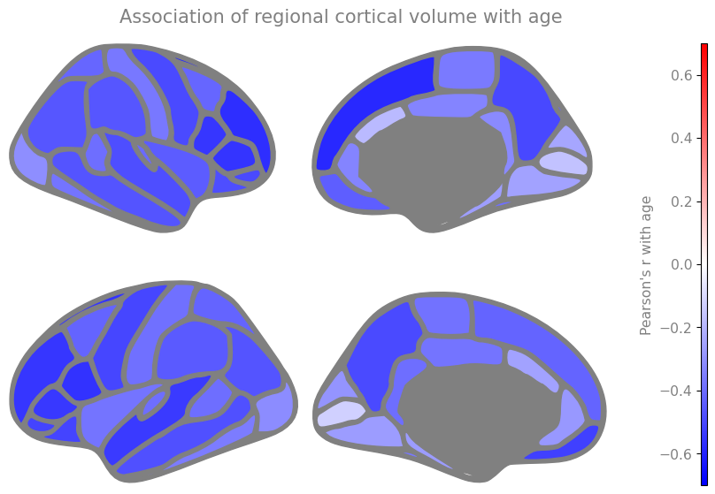

Working with DataFrames#
Now we move onto territory that will feel familiar if you have used R: we import a package, read a file, and store its contents in a data frame.
Importing packages#
We import pandas, which provides R-like data frames, and give it
its conventional alias pd.
import numpy as np
import pandas as pd
import seaborn as sns
import matplotlib.pyplot as plt
The example dataset#
Throughout the book we use cortical volume data derived from the publicly available “Information eXtraction from Images” (IXI) dataset. The task we set ourselves is a simple and well studied one: predict a person’s age from the shape of their cortex.
See also
The anatomical MRI images were processed with Freesurfer, which segments the cortex into anatomically defined regions and measures each one. For an introduction to anatomical MRI analysis, see Andy’s Brain Book.
The table lives in the repository of this book and can be read straight from the web:
DATA_URL = "https://raw.githubusercontent.com/pni-lab/predmod_lecture/master/ex_data/IXI/ixi.csv"
ixi_as_stored = pd.read_csv(DATA_URL)
ixi_as_stored
| ID | Age | lh_bankssts_volume | lh_caudalanteriorcingulate_volume | lh_caudalmiddlefrontal_volume | lh_cuneus_volume | lh_entorhinal_volume | lh_fusiform_volume | lh_inferiorparietal_volume | lh_inferiortemporal_volume | ... | rh_rostralanteriorcingulate_volume | rh_rostralmiddlefrontal_volume | rh_superiorfrontal_volume | rh_superiorparietal_volume | rh_superiortemporal_volume | rh_supramarginal_volume | rh_frontalpole_volume | rh_temporalpole_volume | rh_transversetemporal_volume | rh_insula_volume | |
|---|---|---|---|---|---|---|---|---|---|---|---|---|---|---|---|---|---|---|---|---|---|
| 0 | 2 | 35.800137 | 2188 | 2368 | 6562 | 2459 | 1561 | 9281 | 14136 | 10797 | ... | 2555 | 17309 | 21210 | 12291 | 12287 | 10848 | 1033 | 2269 | 1170 | 6915 |
| 1 | 12 | 38.781656 | 2717 | 2626 | 6621 | 3170 | 2835 | 8870 | 14813 | 11961 | ... | 3260 | 19044 | 24651 | 13871 | 13948 | 11975 | 1100 | 2865 | 1167 | 6941 |
| 2 | 13 | 46.710472 | 2101 | 2488 | 5437 | 2347 | 1859 | 9200 | 16900 | 11675 | ... | 2682 | 17653 | 23804 | 10977 | 12931 | 15127 | 975 | 2099 | 1032 | 7395 |
| 3 | 14 | 34.236824 | 1925 | 1983 | 5153 | 2497 | 2207 | 7686 | 12786 | 8433 | ... | 2120 | 15070 | 21001 | 10993 | 10890 | 10453 | 891 | 2122 | 958 | 6063 |
| 4 | 15 | 24.284736 | 2535 | 1802 | 5461 | 2496 | 1875 | 6859 | 14187 | 7897 | ... | 2825 | 13027 | 21865 | 10651 | 12686 | 11400 | 1185 | 2207 | 1344 | 8218 |
| ... | ... | ... | ... | ... | ... | ... | ... | ... | ... | ... | ... | ... | ... | ... | ... | ... | ... | ... | ... | ... | ... |
| 633 | 648 | 47.723477 | 2009 | 2270 | 5439 | 2684 | 1729 | 9029 | 13407 | 10971 | ... | 3236 | 15464 | 21427 | 11524 | 12869 | 11373 | 814 | 2419 | 1360 | 7423 |
| 634 | 651 | 50.395619 | 1776 | 1532 | 5797 | 2954 | 1992 | 9131 | 13201 | 9005 | ... | 2146 | 11883 | 18137 | 13668 | 10833 | 8420 | 751 | 2304 | 1010 | 6032 |
| 635 | 652 | 42.989733 | 2315 | 1898 | 6234 | 3285 | 1857 | 10453 | 15412 | 10639 | ... | 2931 | 16905 | 25113 | 13148 | 14489 | 13440 | 731 | 2725 | 1525 | 7481 |
| 636 | 653 | 46.220397 | 2411 | 2033 | 5808 | 4012 | 2854 | 9723 | 16169 | 12070 | ... | 2637 | 15636 | 19449 | 13207 | 13480 | 11459 | 1049 | 2855 | 1078 | 7186 |
| 637 | 662 | 41.741273 | 2482 | 1923 | 4686 | 3738 | 1910 | 10996 | 16778 | 10390 | ... | 3492 | 16781 | 20968 | 13379 | 15787 | 12850 | 1069 | 2521 | 1062 | 7931 |
638 rows × 70 columns
Each row is a participant and each column is a variable. After the participant ID and Age
(in years), there are 68 columns of cortical grey matter volume in mm³: the cortex of each
hemisphere is divided into 34 regions by the
Desikan-Killiany atlas
[5], and 34 regions × 2 hemispheres = 68 features. Column names are
prefixed lh_ and rh_ for the left and right hemisphere.
print('participants :', len(ixi_as_stored))
print('columns :', len(ixi_as_stored.columns))
print('first four :', list(ixi_as_stored.columns[:4]))
print('last two :', list(ixi_as_stored.columns[-2:]))
participants : 638
columns : 70
first four : ['ID', 'Age', 'lh_bankssts_volume', 'lh_caudalanteriorcingulate_volume']
last two : ['rh_transversetemporal_volume', 'rh_insula_volume']
One thing to do before anything else: shuffle#
Datasets arrive in some order, and that order is rarely random. Ours is a good example. If we cut the table into consecutive blocks of rows and look at each block separately, a pattern appears:
block = np.arange(len(ixi_as_stored)) // 80 # 0, 0, ..., 1, 1, ..., 2, ...
summary = ixi_as_stored.groupby(block)['Age'].agg(['count', 'mean', 'std']).round(1)
summary.index.name = 'block of 80 consecutive rows'
summary
| count | mean | std | |
|---|---|---|---|
| block of 80 consecutive rows | |||
| 0 | 80 | 35.6 | 12.1 |
| 1 | 80 | 41.2 | 15.0 |
| 2 | 80 | 48.7 | 18.1 |
| 3 | 80 | 50.4 | 14.8 |
| 4 | 80 | 56.5 | 12.9 |
| 5 | 80 | 64.4 | 11.9 |
| 6 | 80 | 60.8 | 15.0 |
| 7 | 78 | 48.7 | 15.0 |
The blocks are not comparable at all. Mean age rises from 36 in the first block to 64 by the sixth — a difference of nearly thirty years — before dropping back in the last two. The rows are ordered by participant ID rather than at random, and whatever that ordering reflects, it is clearly not independent of age. Consecutive rows are therefore not exchangeable.
This matters enormously for everything we do from chapter 3 onwards, where we will repeatedly split the data into one part used for building a model and another part used for testing it. If we split this file at row 80, we would not be comparing a model against fresh data from the same population — we would be comparing it against an older population scanned elsewhere. Any drop in performance would then mix two completely different phenomena: the model’s failure to generalize, and the fact that the two halves are simply not the same kind of data.
The fix is one line, and we will use it in every notebook of this book:
ixi = ixi_as_stored.sample(frac=1, random_state=42).reset_index(drop=True)
ixi.groupby(np.arange(len(ixi)) // 80)['Age'].agg(['count', 'mean', 'std']).round(1)
| count | mean | std | |
|---|---|---|---|
| 0 | 80 | 47.6 | 15.6 |
| 1 | 80 | 48.2 | 18.6 |
| 2 | 80 | 46.1 | 15.6 |
| 3 | 80 | 53.4 | 16.6 |
| 4 | 80 | 52.5 | 16.5 |
| 5 | 80 | 55.8 | 16.8 |
| 6 | 80 | 51.4 | 18.3 |
| 7 | 78 | 51.5 | 16.3 |
sample(frac=1) draws 100% of the rows without replacement — that is, it shuffles them —
and random_state=42 fixes the random seed so that you and I get exactly the same shuffle and
hence exactly the same numbers. reset_index(drop=True) renumbers the rows 0, 1, 2, … so that
row positions and row labels agree again. After shuffling, the blocks are interchangeable.
Note
Shuffling is not a universal cure, and it is not always the right thing to do. If your data has genuine group structure — repeated measurements of the same person, several scanners, several hospitals — then shuffling hides that structure rather than handling it, and a model evaluated on shuffled data can look far better than it will ever be in practice. We come back to this in chapter 6; for now, shuffling is what makes our splits honest.
Let us fix two more conventions that most notebooks in this book repeat: the name of the variable we want to predict, and the list of variables we predict it from.
TARGET = 'Age'
FEATURES = [column for column in ixi.columns if column.endswith('_volume')]
print(TARGET, 'is predicted from', len(FEATURES), 'features, e.g.:')
print(FEATURES[:3], '...')
Age is predicted from 68 features, e.g.:
['lh_bankssts_volume', 'lh_caudalanteriorcingulate_volume', 'lh_caudalmiddlefrontal_volume'] ...
Slicing a data frame#
A single column is obtained with square brackets, and behaves like a vector:
ixi['Age']
0 30.688569
1 25.582478
2 44.851472
3 41.327858
4 70.332649
...
633 25.661875
634 57.221081
635 59.509925
636 68.134155
637 53.670089
Name: Age, Length: 638, dtype: float64
Several columns at once require a list of column names, hence the double square brackets: the
outer pair is the slicing, the inner pair is the list. .head(n) then shows the first n rows.
ixi[['ID', 'Age', 'rh_superiorfrontal_volume']].head(5)
| ID | Age | rh_superiorfrontal_volume | |
|---|---|---|---|
| 0 | 291 | 30.688569 | 22345 |
| 1 | 254 | 25.582478 | 21640 |
| 2 | 44 | 44.851472 | 20431 |
| 3 | 584 | 41.327858 | 25683 |
| 4 | 605 | 70.332649 | 18197 |
Rows can be filtered by a condition on any column:
ixi[ixi['Age'] > 60].head(5)
| ID | Age | lh_bankssts_volume | lh_caudalanteriorcingulate_volume | lh_caudalmiddlefrontal_volume | lh_cuneus_volume | lh_entorhinal_volume | lh_fusiform_volume | lh_inferiorparietal_volume | lh_inferiortemporal_volume | ... | rh_rostralanteriorcingulate_volume | rh_rostralmiddlefrontal_volume | rh_superiorfrontal_volume | rh_superiorparietal_volume | rh_superiortemporal_volume | rh_supramarginal_volume | rh_frontalpole_volume | rh_temporalpole_volume | rh_transversetemporal_volume | rh_insula_volume | |
|---|---|---|---|---|---|---|---|---|---|---|---|---|---|---|---|---|---|---|---|---|---|
| 4 | 605 | 70.332649 | 2222 | 1775 | 4055 | 2518 | 1913 | 7591 | 10842 | 9232 | ... | 1885 | 11496 | 18197 | 10324 | 10384 | 8166 | 681 | 2289 | 1039 | 6606 |
| 10 | 535 | 65.259411 | 1695 | 1064 | 5910 | 3241 | 2424 | 9398 | 11270 | 9934 | ... | 1985 | 12411 | 21155 | 14101 | 10178 | 9501 | 949 | 2636 | 916 | 7135 |
| 15 | 492 | 69.289528 | 1960 | 2024 | 5533 | 2579 | 2098 | 7164 | 12686 | 8705 | ... | 1444 | 11472 | 19754 | 10417 | 10636 | 8937 | 811 | 2124 | 645 | 6304 |
| 19 | 447 | 72.826831 | 1737 | 1414 | 5577 | 3498 | 1446 | 8466 | 11753 | 8147 | ... | 2580 | 11978 | 20022 | 11530 | 10804 | 8476 | 777 | 2266 | 1109 | 7024 |
| 23 | 551 | 70.502396 | 1962 | 953 | 5527 | 3084 | 1351 | 8123 | 12275 | 9554 | ... | 1867 | 12712 | 21439 | 11436 | 12321 | 11370 | 856 | 2315 | 932 | 6519 |
5 rows × 70 columns
To select rows and columns by position, use .iloc:
ixi.iloc[:5, :3]
| ID | Age | lh_bankssts_volume | |
|---|---|---|---|
| 0 | 291 | 30.688569 | 1992 |
| 1 | 254 | 25.582478 | 2145 |
| 2 | 44 | 44.851472 | 1722 |
| 3 | 584 | 41.327858 | 2464 |
| 4 | 605 | 70.332649 | 2222 |
Warning
Pandas also offers .loc, which selects by label rather than by position. On a freshly
shuffled and re-indexed frame the two look deceptively similar, but they are not the same:
.iloc[0:80] gives you 80 rows, while .loc[0:80] gives you 81, because label-based slicing
includes both endpoints. Mixing them up is an easy way to have your “independent” datasets
quietly share a participant. Throughout this book we use .iloc for position-based selection.
describe() gives the usual summary statistics of every numeric column at once:
ixi[['Age', 'rh_superiorfrontal_volume', 'lh_superiorfrontal_volume']].describe().round(1)
| Age | rh_superiorfrontal_volume | lh_superiorfrontal_volume | |
|---|---|---|---|
| count | 638.0 | 638.0 | 638.0 |
| mean | 50.8 | 21084.0 | 20313.8 |
| std | 17.0 | 3168.5 | 3200.2 |
| min | 20.0 | 12444.0 | 12118.0 |
| 25% | 35.2 | 19001.0 | 18153.2 |
| 50% | 53.5 | 20831.5 | 20067.0 |
| 75% | 64.6 | 22953.0 | 22151.2 |
| max | 86.3 | 32412.0 | 31393.0 |
Plotting#
Data frames come with built-in plotting. Let’s look at how age is distributed in the cohort:
ixi.hist('Age', bins=25)
plt.xlabel('age (years)')
plt.show()

Ages run from 20 to 86, with most participants in middle age. Now let’s plot the volume of one region against age:
ixi.plot.scatter(x='Age', y='rh_superiorfrontal_volume', alpha=0.5)
plt.show()

That is an unmistakable downward trend: the superior frontal cortex loses volume with age. It is also a noisy one — at any given age, volumes differ between people by far more than the average decade-to-decade change. Both observations will shape everything that follows: the trend is what makes prediction possible at all, and the noise is what limits how good the prediction can get.
It is worth seeing how widespread this trend is across the cortex. Below we correlate every one of the 68 regional volumes with age and paint the result onto a brain surface.
age_correlation = ixi[FEATURES].corrwith(ixi[TARGET])
# ggseg expects labels of the form "<region>_<hemisphere>"; ours are "<hemisphere>_<region>_volume"
def to_ggseg_label(column_name):
hemisphere, region, _ = column_name.split('_')
return region + ('_left' if hemisphere == 'lh' else '_right')
correlation_per_region = {to_ggseg_label(c): v for c, v in age_correlation.items()}
# ggseg 0.1 predates matplotlib 3.9 and calls matplotlib.cm.get_cmap, which some matplotlib
# versions no longer provide; restore it so the brain plot keeps working either way
import matplotlib.cm
if not hasattr(matplotlib.cm, 'get_cmap'):
matplotlib.cm.get_cmap = matplotlib.colormaps.get_cmap
try:
import ggseg
ggseg.plot_dk(correlation_per_region, cmap='bwr', vminmax=[-0.7, 0.7], figsize=(10, 5),
background='w', edgecolor='gray', bordercolor='gray',
ylabel="Pearson's r with age",
title='Association of regional cortical volume with age')
except Exception:
# ggseg is optional, and unmaintained: if it is missing or incompatible with the
# installed matplotlib, fall back to a plain ranked bar plot
ordered = age_correlation.sort_values()
plt.figure(figsize=(6, 12))
sns.barplot(x=ordered.values, y=ordered.index, color='steelblue')
plt.xlabel("Pearson's r with age")
plt.title('Association of regional cortical volume with age')
plt.tight_layout()
plt.show()

Tip
Click “Click to show” above to reveal the code behind the figure. The brain rendering uses the optional package ggseg; if it is not installed, the cell falls back to a bar plot and everything else in the book still works.
Almost the entire cortex is blue: volume declines with age nearly everywhere, and in most regions the correlation is moderate rather than strong. That is a useful thing to know before we start modelling. No single region is going to predict age well on its own — but there are 68 of them, all carrying a little bit of information. Combining many weak predictors into one good prediction is exactly what predictive modelling is for.
It is also, as we are about to discover in the next chapter, exactly where things start to go wrong.
See also
Pandas has an excellent lightweight “Getting Started” tutorial, and seaborn’s gallery is a good way to find the plot you want.
Exercise 1.4
Which region’s volume correlates most strongly with age, and which least? Print the five strongest.
Solution
age_correlation.sort_values().head(5) # most negative
age_correlation.abs().sort_values().head(5) # weakest, regardless of direction
Exercise 1.5
Plot rh_superiorfrontal_volume against lh_superiorfrontal_volume. What does the result tell
you about how much independent information the 68 features carry?
Solution
ixi.plot.scatter(x='lh_superiorfrontal_volume', y='rh_superiorfrontal_volume', alpha=0.5)
The two hemispheres are strongly correlated, as are most pairs of regions — partly because people simply differ in head size. So the 68 features are nowhere near 68 independent pieces of information. This redundancy (collinearity) is a recurring theme: it is why the methods of chapter 4 work so well.
Exercise 1.6
Open this notebook in Colab and load your own dataset instead. You can upload a file directly
(the “Files” tab on the left) or mount your Google Drive. Is your data in Excel format? No
problem — see
read_excel.
Working through the book with your own data is more work than following along, but it is by far the best way to internalize the concepts.